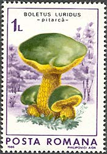
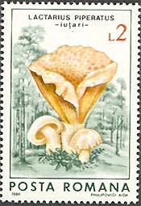
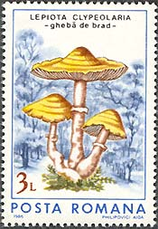
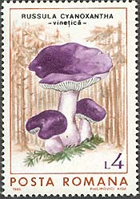
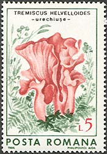
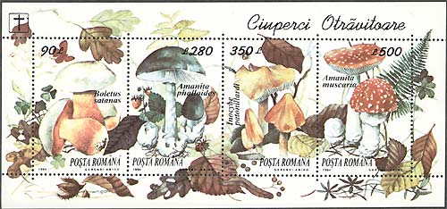

Fungi on Romanian Stamps
Romania, thanks to its varied relief, is a very afforested country. And who says forests, says also fungi. Not only the quantity, but also their variety makes Romania very interesting for its fungi.
 |
 |
 |
Please take a look at the set, shown above and below, and issued on Aug. 15, 1986, Scott 3405-3410. Aren't they nice, the mushroom stamps?
 |
 |
 |
And how many interesting names! Like Amanita Rubescens, Tremiscus Helvelloides (or, in Romanian, simply Urechiuse - read Urekiushe, what means Small ears).

The souvenir sheets issued on Aug. 8, 1994, Sc. 3935 and 3936, are even more nice. The first present mushrooms, and the second toadstools.
. 
And again I like some names, like Lepista nuda or Amanita muscaria. Please notice the signs in the left upper corner.
Please point on stamps with the mouse for more information.
| Published:
05/24/2002. Revised: 05/24/02. Copyright © 2002 by Victor Manta, Switzerland. All rights reserved worldwide. |